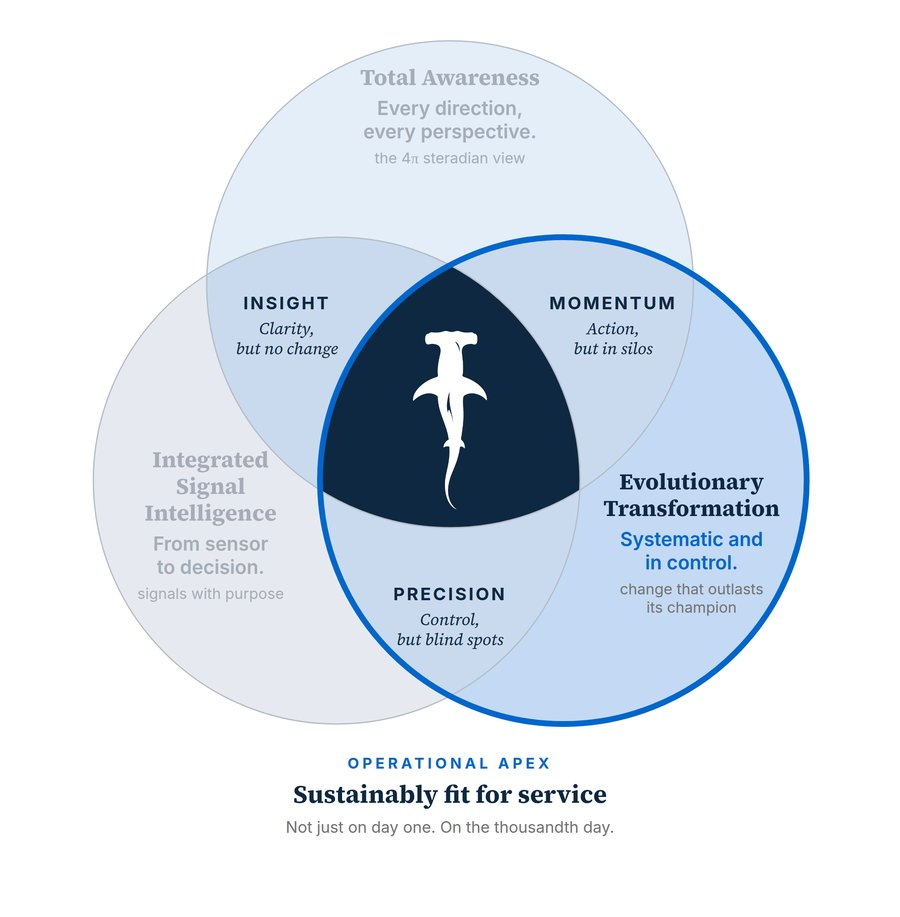

The man whose job was to shut the bow doors was asleep in his cabin. Nothing on the bridge could tell the captain.
Zeebrugge, 6 March 1987, a little after seven in the evening: The Herald of Free Enterprise pulled away from the berth with her nose trimmed down for the loading ramp and her bow doors wide open. Nobody reported a problem, so under the standing orders the captain took it that his ship was ready for sea. About twenty minutes later she cleared the harbour wall and worked up towards 18 knots. The sea came in through the open doors onto one huge vehicle deck.
She was on her side in about four minutes. Nearly 200 people died.
The popular version is a sleeping crewman. The people on the bridge that night were doing the best they could with the ship and the orders they had; the company's own captains had been asking for a fix for twenty months. The official report found fault on board, then put the root of it higher up, in the company. Its version is the one worth your time.
Where we are
So far in this series: Total Awareness - looking in every direction and from every perspective; then Integrated Signal Intelligence - following the signals all the way from the sensor to the person who has to decide. Both of those are about knowing. This article is about the third element, Evolutionary Transformation - being systematic and in control, so that the change outlasts whoever championed it. These two words normally work in tension. Read on to find out why they work in harmony here.

Evolutionary Transformation - systematic and in control
The difference I'm pointing at is between success at a point in time and success that lasts. A demonstration can succeed, a pilot can succeed, but neither of those is the transformation. The transformation is when the new way of working is still being done well long after the novelty has worn off and the champion has moved on - change that outlasts its champion.
Two ideas hold it up. Here's the first.
It shouldn't matter who is at the controls. One good person can keep an operation in control; many do, every day - they're the quiet heroes of this industry. But when control lives in a person it gets messy the moment that person isn't there - on leave, promoted, retired or simply off shift. A system is in control when a different person in the seat doesn't matter.
Although "Systematic and in control" isn't a phrase I can claim as my own, nor one I've found in common use across industry documents, the ideas behind it are well established, in more than one industry. Aviation's regulators describe a safety management system as a systematic approach to managing safety; pharmaceutical quality guidance talks about maintaining a "state of control". Systematic is the aviation word; in control is the pharmaceutical one; together they describe how Evolutionary Transformation actually gets done.
The second idea is in the name - why "evolutionary" and "transformation" sit together - and I'd like to come back to it after the story.
First, the ship that came home
In October 1983 the Pride of Free Enterprise left No. 5 berth at Dover with her bow doors and her stern doors open. The assistant bosun - the crewman whose job it was to shut them - had fallen asleep and hadn't heard "Harbour Stations", the call to departure posts. Amazingly, she came home; no harm to anyone, or to the ship, is on record.
Three and a half years later her sister ship, the Herald, did the same thing leaving Zeebrugge - same company, same job and the same blind bridge. One came home, the other capsized - and I'd rather not pretend to know exactly why. Trim, speed and sea state are the likely reasons, but the records I've seen don't prove it.
What matters is what happened in between.
The incident on board the Pride wasn't ignored. Almost a year on, one of her masters wrote to his officers that the ship had sailed twice with her doors open since going on the Zeebrugge run. General instructions issued that summer already told the officer loading the vehicle deck to make sure the doors were secured. Remind people and tell someone to check, then trust the man who shuts the doors to shout if there's a problem(?) Everything still depended on a person being awake.
Then, in June 1985, Captain Blowers of the Pride asked for the fix that didn't: indicator lights on the bridge to show whether the doors were shut. His managers wrote their thoughts on his memo. One asked whether they needed an indicator to tell them whether the deck storekeeper was "awake and sober", another wrote: "Nice but don't we already pay someone!"
To be fair, from where they sat it looked like paying twice for a job someone was already paid to do. Two more captains asked for the same fix over the next sixteen months, but in October 1986 the answer came back: "no go".
Less than five months later the Herald sailed.
Within days of the disaster the lights were fitted across the rest of the fleet. Mr Justice Sheen, who led the inquiry, didn't stop at the man asleep in his cabin: "From top to bottom the body corporate was infected with the disease of sloppiness."
So what separated the two ships on the night was probably conditions nobody controlled - call it luck. The difference that matters is that the Pride handed over the whole lesson for free - and it was spent on reminders to check, not on the lights the captains asked for.
Why "evolutionary" and "transformation" belong together
Here's the second idea. It's in the name - and it's the one I'd most like you to take away.
Most of the technology arriving in heavy industry is transformational: something the organisation has never done before, with no precedent, no baseline risk case and no muscle memory. The trouble starts when transformation is treated as a single leap. There's nothing to fall back on if it goes wrong, so it's judged on one moment of success - and the attention leaves with the champion.
Small upgrades of what you already do aren't the answer either - you'd never get anywhere new. That's why the element carries both words: transformational in what it changes, evolutionary in how it gets there. Steps small enough to test, failures contained so the foundations survive and each gain held before the next is attempted.
In a different example, Concorde and the Boeing 747 first flew three weeks apart in 1969. Both were remarkable. Twenty Concordes were built and the fleet retired in 2003. The 747 was built for more than half a century through successive versions, with the last of 1,574 delivered in January 2023. Only one kept evolving.
I've lived a small version of this myself (a much less dramatic one, thankfully!). When I qualified as a licenced aircraft engineer, maintenance organisations worked under Part-145, the European rules for aircraft maintenance. Back then it asked for a quality system: written procedures, independent audit and named, competent people authorised to sign. There was no full safety management system in those days - I'd be misleading you if I said there was. Aviation grew one out of that foundation. The EU made a management system part of Part-145 from December 2022; the UK required one by July this year. Nobody threw the old discipline away. They built on it, one controlled step at a time. Transformational in what it changed, evolutionary in how it got there.
It's also why a modern airliner doesn't leave the gate on "nobody told me the door was open". It's built to tell the flight deck itself.
Three questions for your operation
- If the person who championed this change left tomorrow, what would happen to it?
- Could an untrained person take charge of it today? What stops them?
- Are you taking one big leap, or a series of steps you can test and hold?
Over to you
Next time, the three overlaps: what two out of three looks like from the inside, told through good operations that were sure they were fine.
As ever, I'm happy to be challenged or proven wrong on any part of this. Whether you run the site or you're the one who gets the call at three in the morning, I'd like your perspective on one thing: What's the control in your operation that still depends on one person being awake?
This article first appeared on LinkedIn, where the conversation carries on: join it there.